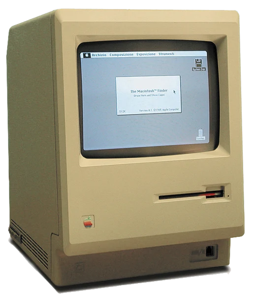
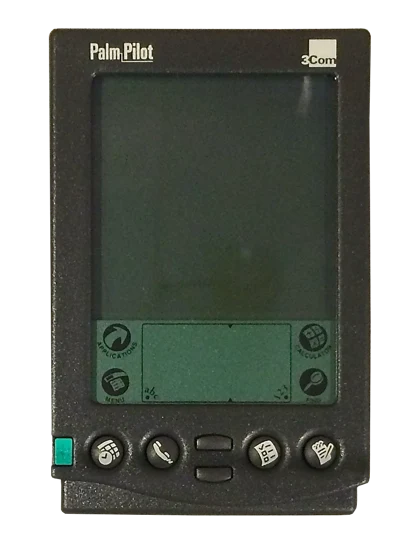

1950s
Punch cards
You write a program as holes in cardboard, hand the stack to an operator and come back tomorrow. One typo? Come back the day after.
You speak machine
Press → to travel through time
You write a program as holes in cardboard, hand the stack to an operator and come back tomorrow. One typo? Come back the day after.
The first chatbot, by Joseph Weizenbaum at MIT. It only flipped your words back as questions, and people still told it their secrets.
In 2001: A Space Odyssey, a computer you can just talk to. The dream… and the warning: “I'm sorry Dave, I'm afraid I can't do that.”
A keyboard and a blinking cursor. Powerful, if you memorized exact commands. C:\> DIR /W

The Macintosh puts windows, icons and a mouse in your home. You stop remembering commands, you see them.

A computer in your pocket. You write on glass with a stylus… but you still have to learn its alphabet (Graffiti).
The iPhone 4S ships with Siri. Just say it. “Set a timer for 10 minutes.” Anything more complicated: “Here's what I found on the web.”
The assistant moves into your kitchen. Millions of homes, mostly used for timers, weather and music. Useful, but it can't really do much.
Nov 30. The machine finally speaks human, any topic, any style. 100 million users in two months. But it only talks.
The AI gets hands: it reads your files, runs tools, checks its work and keeps going until the job is done.
Time to reach 100 million users